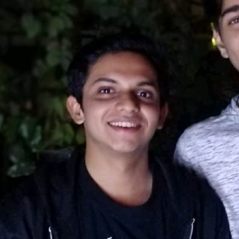

Tejas Rathod
My profound journey in the realm of Artificial Intelligence commenced in mid-2022 when I became part of the Symbiosis Centre of Applied Artificial Intelligence (SCAAI). Under the guidance of Dr. Shruti Patil, the HOD of AIML, I embarked on a path that would challenge and nurture my abilities. This journey, however, was not without its hurdles. Being the sole representative from my final year batch and the lone member from the E&Tc department, I faced the initial challenge of transitioning from the virtual realm back to an offline mode of learning.
My first task involved delving into the domain of Attention Span through literature review. As I immersed myself in the nuances of research, I realized that the laboratory environment was distinct from conventional project work. Determined to adapt, I engaged in consultations with my seniors and mentors at SCAAI. After careful consideration, I embarked on an innovative project focusing on Emotion Recognition using Meta Learning—an uncharted territory brimming with potential.
Undoubtedly, the journey posed significant challenges. Meta Learning offered limited open-source resources, prompting me to delve deep and craft an algorithm that would meet the project's objectives. Through thorough exploration, I opted for Siamese Networks, harnessing my prior experience to optimize its application. After intensive effort, the algorithm matured, yielding state-of-the-art results. Eager to expand its scope, I broadened the age range, encompassing both children and adults, and integrated the algorithm with established architectures for comprehensive evaluation.
Data, being the cornerstone of my work, received meticulous attention. Implementing advanced techniques like Generative Adversarial Networks (GANs), I meticulously curated datasets from various sources to establish a robust benchmark. My contributions extended beyond the project as I assisted the lab incharge with organizing and scheduling computers, setting up and testing software, and mentoring juniors and PhD students in navigating the lab environment.
The apex of my learning came when I embarked on drafting a publication-worthy paper—a journey that underscored the intricacies of quality research. Guided by my mentor, I honed every aspect, from content flow to diagram precision, analysis rigor, and linguistic excellence, culminating in a Q1 level paper. My accomplishments were further enriched by creating a pioneering dataset of spontaneous emotion facial expressions among teenagers—a testament to my dedication.
I persevered with my passion for innovation by pursuing my final year project idea of an Agricultural Robot. To achieve this, I assembled a diverse interdisciplinary team, driven by the shared goal of creating a robot that met international standards. Despite facing challenges in securing funding, I remained undeterred in my pursuit of knowledge and growth. This led me to join AI4M, Pune as a Deep Learning Intern, where I focused on developing real-time computer vision solutions for clients.
My tenure at SCAAI has transcended technical prowess; it has instilled the confidence to contribute meaningfully through computer vision. I am deeply grateful to Dr. Shruti Patil for her unwavering guidance and patience, pivotal in shaping my journey towards research maturity.